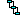

This icon... | Represents a... |
 | Server. You can have multiple server contexts displayed in Designer. The active server context is the one that is highlighted in Package Navigator view. To display the contents of the server, click the  symbol next to its name. symbol next to its name. |
Server. The Integration Server instance that is currently used as the as the (local development server. | |
Server. The Integration Server instance that is currently not used as a local development server. | |
Package. A package contains a set of services and related files, such as specifications, IS document types, and output templates. To display the contents of a package, click next to its name.Note:Designer places Trading Networks document types in a package named “Trading Networks Documents”. | |
 | Folder.A folder contains related services and optional folders (called subfolders). To display the contents of a folder, click next to its name. |
REST resource folder. A folder that contains the services that act as REST resources. To display the services for a REST resource, click next to its name. Services can be named _get, _put, _post, _patch, _delete, or _default. | |
 | Flow service. A flow service is a service written in the webMethods flow language. |
Java service. A Java service is a service written in Java. | |
C service. A C service is a service written in C/C++. | |
Cloud connector service. A cloud connector service works with webMethods CloudStreams to integrate an on-premise application with a SaaS application. | |
.NET service. A .NET service is a service that calls methods imported from .NET assemblies (using the webMethods Microsoft Package). | |
OData service. An OData service is a service that exposes and allows clients to access the data in an OData data model. | |
 | IS document type. An IS document type contains a set of fields used to define the structure and type of data in a document. |
 | Publishable document type. A publishable document type is an IS document type with specific publishing properties. Instances of publishable document types can be published and subscribed to. Publishable document types can be used anywhere an IS document type is needed. |
REST API descriptor. A REST API descriptor is a collection of REST resources and meta data, including how to access the resources and what parameters are expected and returned, that describe a REST API. | |
XML document type. An XML document type corresponds to a global element declaration, global attribute declaration, or global complex type definition in an XML schema definition. | |
XML field. An XML field corresponds to a global element declaration with simple content as defined in an XML schema definition. | |
Specification. A specification is a formal description of a service’s inputs and outputs. | |
IS schema. An IS schema is the blueprint or model document against which you validate an XML document. The schema defines what can and cannot be contained in the XML documents it validates. | |
webMethods Messaging Trigger. A webMethods Messaging Trigger is trigger that subscribes to and processes documents published/delivered to Universal Messaging, Broker, or locally. | |
JMS trigger. A JMS trigger is a trigger that subscribes to messages from a destination (queue or topic) on a JMS provider and then processes those messages. | |
MQTT trigger. An MQTT trigger is a trigger that subscribes to a topic on an MQTT server and then processes messages published to that topic. | |
Map service.A map service is a service written in the webMethods flow language that allows you to adjust the contents and structure of a pipeline. A map service can be reused in different flow services. | |
Provider web service descriptor (WSD). A web service descriptor that contains the definition of a provider IS web service. A provider web service allows an external user to invoke an existing IS service as an “operation” of the web service. | |
Consumer web service descriptor (WSD). A web service descriptor that contains the definition of a consumer web service. Consumer web services are external web services that can be invoked from within the local Integration Server. | |
Web service connector. A web service connector is a flow service that invokes a web service located on a remote server. Designer automatically generates a web service connector when it creates a web service descriptor for a consumer web service. | |
gRPC descriptor. The gRPC descriptor created from a proto file containg one or more gRPC service definitions. | |
gRPC method flow service. A type of flow service that corresponds to a RPC method in a gRPC service definition. | |
gRPC document type. A type of IS document type that represents message content from a proto file containing a gRPC service. | |
Adapter service. An adapter service connects to an adapter’s resource and initiates an operation on the resource. Adapter services are created using service templates included with the adapter. For information about creating adapter services, refer to the documentation provided with the adapter. | |
Adapter notification. An adapter notification enables an adapter to receive event data from the adapter’s resource. There are two types of adapter notifications: For information about creating an adapter notification, refer to the documentation provided with the adapter. | |
Publishable document type for an adapter notification. An adapter notification can have an associated publishable document type that the adapter uses to send the notification data to an Integration Server or a Broker. | |
Listener.A listener is an object that connects to an adapter resource and waits for the resource to deliver data when an event occurs on the resource. Listeners work with listener notifications to detect and process event data on the adapter resource. For information about creating a listener, refer to the documentation provided with the adapter. | |
Connection. A connection is an object that contains parameters that adapter notifications and listeners use to connect to a resource. For information about creating a connection, refer to the documentation provided with the adapter. | |
Flat file dictionary. A flat file dictionary contains record definitions, field definitions, and composite definitions that can be used in multiple flat file schemas. | |
 | Flat file schema. A flat file schema is the blueprint that contains the instructions for parsing or creating the records in a flat file, as well as the constraints to which an inbound flat file document should conform to be considered valid. Using flat file schemas, you can translate documents into and from flat file formats. |
 | XSLT service. An XSLT service converts XML data into other XML formats or into HTML, using rules defined in an associated XSLT stylesheet. |
Blaze rule service. A rule deployed to Integration Server by Blaze Advisor. Integration Server generates them as rule services and executes them at run time. | |
Trading Networks document type. You can drag and drop a Trading Networks (TN) document type into a process model. The “drop” creates a Receive step in the process, with the subscription set to the TN document type name. | |
WebSocket Server Endpoint. WebSocket server endpoint captures the properties required for callback services for the life cycle of a WebSocket identified by a path which indicates the location of the endpoint within a server. | |
WebSocket Client Endpoint. WebSocket client endpoint is designed to capture information related to connection and the respective callback services thereof. It can connect to the server endpoint identified by a URI in a WebSocket application. | |
JSON document type. A JSON document type that defines the structure and types of data in a JSON schema. | |
GraphQL Descriptors. An GraphQL descriptor to query a specific data to the server and get the response in a predictable way. | |
Unknown Node. The webMethods component used to create/develop the element is not installed on the client machine. | |
Unknown Service. The webMethods component used to create this service is not installed on the client machine. |